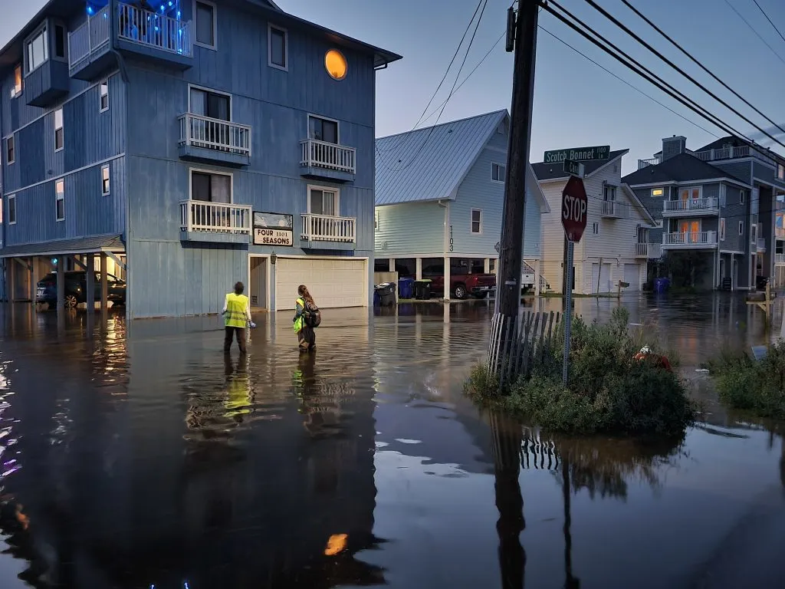

Projects
Sunny Day Flooding Project

As local sea-level rise, land subsidence, and development continue to increase in coastal areas, so does the frequency of flooding.
The tidal cycle now takes place on higher average sea levels, resulting in “sunny day” flooding of roadways during high tides. Sea water also infiltrates stormwater drainage systems at normal tidal levels, such that ordinary rainstorms lead to flooding. While these minor floods draw less attention than catastrophic storms, their high frequency imposes a chronic stress on coastal communities and economies by disrupting critical infrastructure services.
Team members
Recent Research
Projects – Hino Lab at UNC Projects – Hino Lab at UNC Projects – Hino Lab at UNC Hino Lab at UNC We study impacts of and responses to climate-driven hazards We study impacts of and responses to climate-driven hazards We study impacts of and responses to climate-driven hazards
Coastal Migration
Who’s moving towards and away from coastal hazards?
Team members
Projects – Hino Lab at UNC Projects – Hino Lab at UNC Projects – Hino Lab at UNC Hino Lab at UNC We study impacts of and responses to climate-driven hazards We study impacts of and responses to climate-driven hazards We study impacts of and responses to climate-driven hazards
Recent Research
Projects – Hino Lab at UNC Projects – Hino Lab at UNC Projects – Hino Lab at UNC Hino Lab at UNC We study impacts of and responses to climate-driven hazards We study impacts of and responses to climate-driven hazards We study impacts of and responses to climate-driven hazards
Flood Insurance
Team members
Projects – Hino Lab at UNC Projects – Hino Lab at UNC Projects – Hino Lab at UNC Hino Lab at UNC We study impacts of and responses to climate-driven hazards We study impacts of and responses to climate-driven hazards We study impacts of and responses to climate-driven hazards